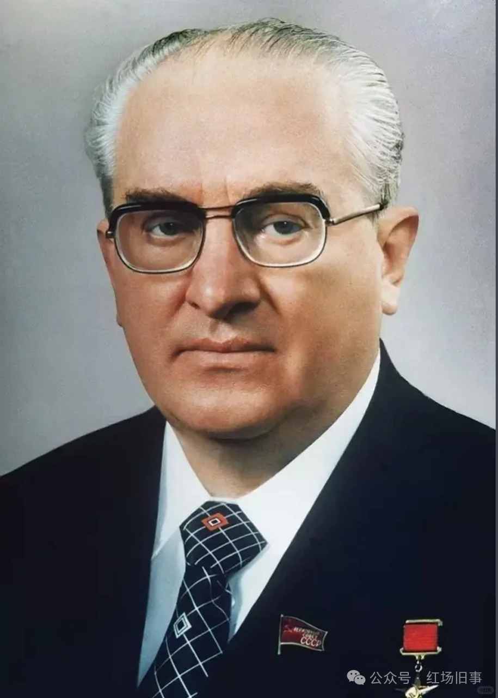
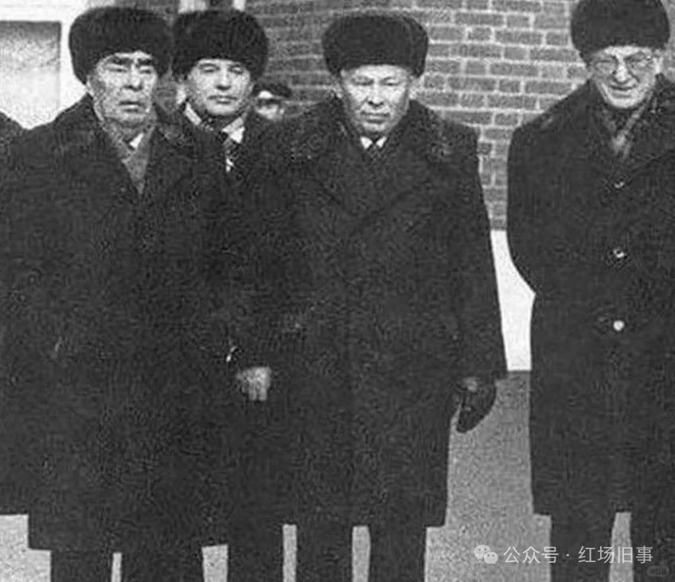
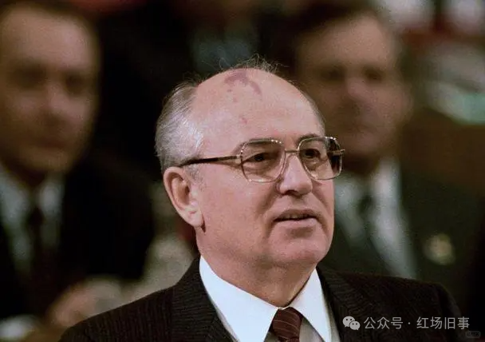
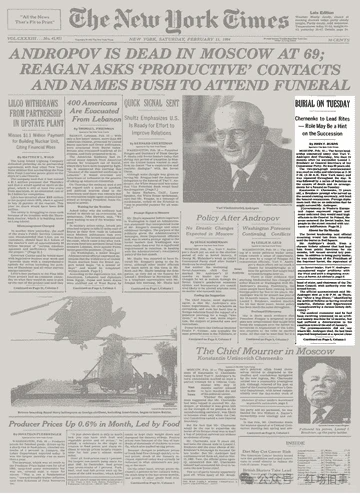
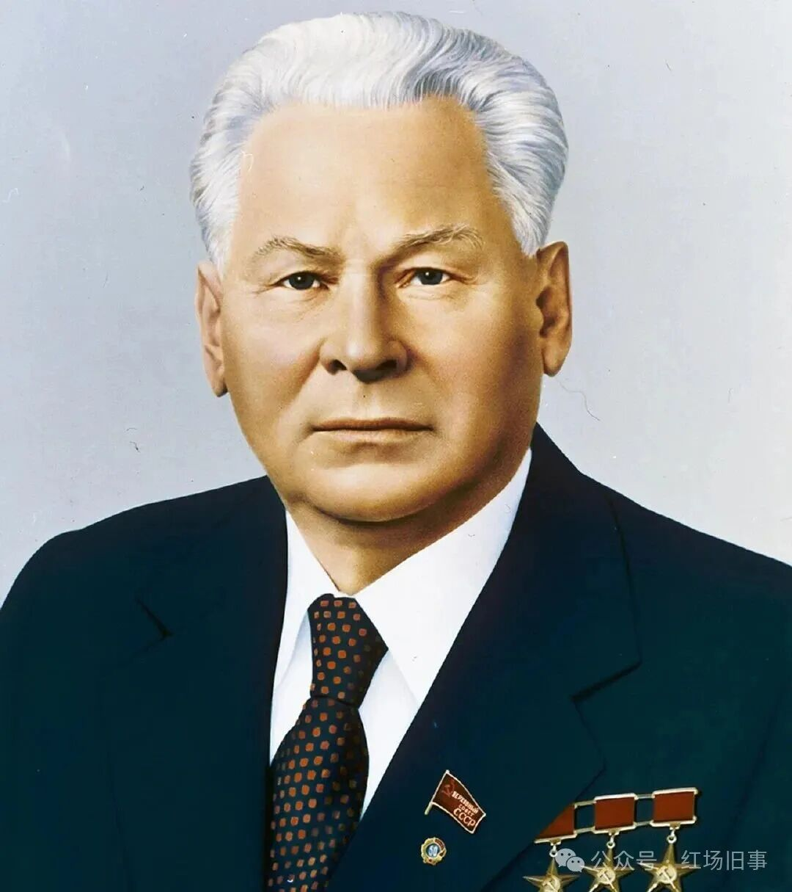
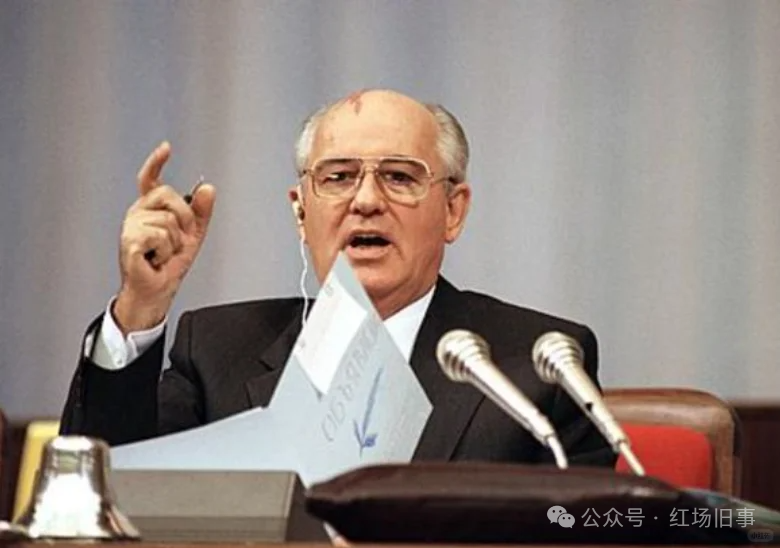

老人政治：两个病入膏肓的领导人，和一个帝国最后的回光返照
文字与图片版权归各自权利人所有。 查看公众号原文 ↗
1982年11月10日，莫斯科勃列日涅夫去世的消息传出时，整个国家没有太大波动。人们早已习惯了这个老人坐在电视里的样子。十八年了，他和他的时代一样，疲惫、臃肿、停滞。葬礼上，新领导人站在列宁墓上向群众挥手。他戴着眼镜，面容清瘦，目光锐利——和前任完全不同。他叫尤里·安德罗波夫，68岁，克格勃主席。人群中有人小声议论：“这个人，是不是能不一样？”接下来的600多天，安德罗波夫让苏联人第一次看到了不一样的希望。反腐、整顿纪律、提拔年轻干部——他像一个医生，试图给这个病入膏肓的帝国做一场大手术。但手术刚开始，医生倒下了。两年后，另一个老人契尔年科接过了权力。他比勃列日涅夫还老，比勃列日涅夫还病，比他更无力改变任何事。这是苏联历史上最荒诞的两年：两个病入膏肓的老人轮流执政，一个想改革但没时间，一个有时间但不想改。等第三个上台时，窗口已经永远关闭。
一、安德罗波夫：克格勃出身的改革者安德罗波夫是苏联领导人里的异类。

尤里·弗拉基米罗维奇·安德罗波夫
他15岁参加工作，当过电报员、电影放映员、水手。卫国战争期间在敌后打游击，战后进入外交系统，1956年任驻匈牙利大使——那一年他参与了镇压匈牙利革命的决策，亲眼看到苏联坦克碾过布达佩斯。这段经历塑造了他：他忠于体制，但不迷信体制；他相信改革必要，但深知改革风险。1967年起，他执掌克格勃15年。这15年里，他比任何人都清楚苏联的问题有多深：贪污横行、效率低下、信仰流失、造假成风。他掌握着所有人的黑材料，也掌握着这个国家最真实的数据。他是少数几个知道真相的人。1982年上台后，安德罗波夫做的第一件事，就是让真相浮出水面。他公开批评前任时期的“虚假繁荣”，承认苏联经济“存在严重问题”。这在勃列日涅夫时代是不可想象的——领导人公开承认失败，本身就是一种革命。
二、反腐风暴：动真格的600天安德罗波夫的改革从最要害的地方开刀：反腐。

勃列日涅夫、戈尔巴乔夫、契尔年科、安德罗波夫
第一个被抓的是索契市长——黑海度假胜地的一把手，被查出贪污受贿、倒卖国家物资。紧接着，内贸部长被抓，渔业部长被抓，乌兹别克斯坦整个领导层被调查。克格勃出身的安德罗波夫知道：反腐败，必须从高层动手。乌兹别克斯坦案最为震撼。第一书记拉希多夫在位20年，每年上报棉花产量超额完成，实际上全是造假。他手下形成了一个庞大的贪腐网络，从中央到地方，从工厂到农庄，几乎所有人都拿了好处。安德罗波夫派去的调查组发现：上报的产量比实际多出一倍以上，虚报的棉花被换成真金白银，流进官员的口袋。拉希多夫在审讯期间心脏病发作死亡，他的同伙被一网打尽。莫斯科的部长们也纷纷落马，整个官僚系统陷入恐慌。这是自斯大林时代以来，苏联最大规模的反腐行动。除了反腐，安德罗波夫还做了三件事：整顿劳动纪律。他派纠察队去商店、工厂、机关，抓那些上班时间喝酒、旷工、溜号的人。仅仅在莫斯科，一天就抓到上千人。工人们抱怨，但生产效率真的提高了——1983年上半年，工业产值增长4.2%，比前一年翻了一倍。经济试验。他在几个部门试点“扩大企业自主权”，允许工厂留成更多利润用于发奖金和扩大生产。这是赫鲁晓夫时代之后，苏联第一次尝试向市场机制靠拢。提拔年轻干部。他把一批50岁左右的干部从地方调到中央，其中有一个来自斯塔夫罗波尔的年轻人，叫戈尔巴乔夫。

戈尔巴乔夫1983年的苏联，真的在变好。人们开始相信，这个戴眼镜的克格勃主席，也许能让国家走出泥潭。
三、时间不站在他这边但安德罗波夫的身体在垮掉。他本来就有严重的肾病，上台后高强度的工作让病情急剧恶化。1983年8月，他住进医院，再也没有出来。此后的15个月，他在病房里处理政务，通过电话下达指示，靠血液透析维持生命。1984年2月9日，安德罗波夫去世。执政时间：15个月。

《纽约时报》：安德罗波夫逝世
他的改革刚刚开始：反腐还在进行，经济试验才见成效，年轻干部还没到位。所有的一切，都停在了半路上。后来有人问戈尔巴乔夫：如果安德罗波夫多活几年，苏联会怎样？戈尔巴乔夫沉默很久，说：“至少，我们有可能会走另一条路。”
四、契尔年科：时间倒流的13个月安德罗波夫死后，谁来接班？按照年龄和资历，该轮到戈尔巴乔夫了。但政治局里那些老人不放心——这个年轻人太激进，太像安德罗波夫。他们需要一个“自己人”，一个不会动他们奶酪的人。于是，72岁的契尔年科被推上前台。

契尔年科是勃列日涅夫的老部下，一辈子在机关里写文件、管人事、当副手。他身体比勃列日涅夫还差——肺气肿、肝病、心脏病，走路需要人扶，说话气喘吁吁。他的执政可以用四个字概括：全面倒退。反腐停止了。拉希多夫案被悄悄搁置，被捕的官员陆续释放。劳动纪律整顿不了了之，纠察队撤了，工人又回到上班喝酒、下午遛号的状态。经济试验被叫停，计划经济的老办法重新上线。1984年的苏联，仿佛回到了1982年。一切照旧，一切如常，一切都在原地踏步。唯一的变化是，契尔年科的病情越来越重。他出席公开活动的次数越来越少，讲话的时间越来越短。1985年2月，他住进医院，再也没有出来。1985年3月10日，契尔年科去世。执政时间：13个月。
五、为什么说“窗口已关”？从安德罗波夫上台到契尔年科去世，一共两年零四个月。这两年多里，苏联经历了什么？一个想改革的人，干了15个月，倒在病床上；一个不想改的人，干了13个月，倒在病床上。两年多时间，就在两个老人的病床边白白流走了。等戈尔巴乔夫上台时，时间是1985年3月。苏联面对的是什么？经济上，石油价格从1983年开始下跌，苏联的外汇收入急剧萎缩。军事上，里根启动“星球大战”计划，苏联被迫投入新一轮军备竞赛。社会上，酗酒、黑市、信仰流失已经到了不可收拾的地步。国际上，阿富汗战争还在拖，东欧国家开始蠢蠢欲动。戈尔巴乔夫接手的是一个比1982年更糟糕的国家。安德罗波夫在时，苏联还有改革的可能；契尔年科在时，改革的窗口正在关闭；等到戈尔巴乔夫时，窗口已经只剩下一条缝——他拼命往外挤，结果把整面墙都挤塌了。后来的历史证明：1982—1985年，是苏联自救的最后窗口。这窗口本可以开得更大一些，如果安德罗波夫多活几年；这窗口本可以关得慢一些，如果契尔年科少活几个月。但历史没有如果。
结语：老人政治的最后标本安德罗波夫和契尔年科，是苏联老人政治的最后标本。一个是68岁上台，干了15个月去世；一个是72岁上台，干了13个月去世。他们的年龄、健康、执政时间，构成了一个荒诞的序列：勃列日涅夫（76岁去世）→安德罗波夫（70岁去世）→契尔年科（74岁去世）。三年换了三个总书记，平均执政时间不到两年。这三年里，苏联像一辆无人驾驶的汽车，在悬崖边缓缓滑行。安德罗波夫想踩刹车，但脚还没伸过去就倒下了；契尔年科连方向盘都不想碰；等戈尔巴乔夫冲进驾驶室，才发现刹车已经失灵，油门卡住了。老人政治留给苏联的最后遗产，是一段被浪费的时间，和一个再也无法挽回的窗口。

1985年3月，戈尔巴乔夫站在契尔年科的葬礼上，望着列宁墓下那些白发苍苍的面孔。他知道，接下来轮到他自己了。他不知道的是：他即将接过的不只是权力，还有一个帝国最后的倒计时。